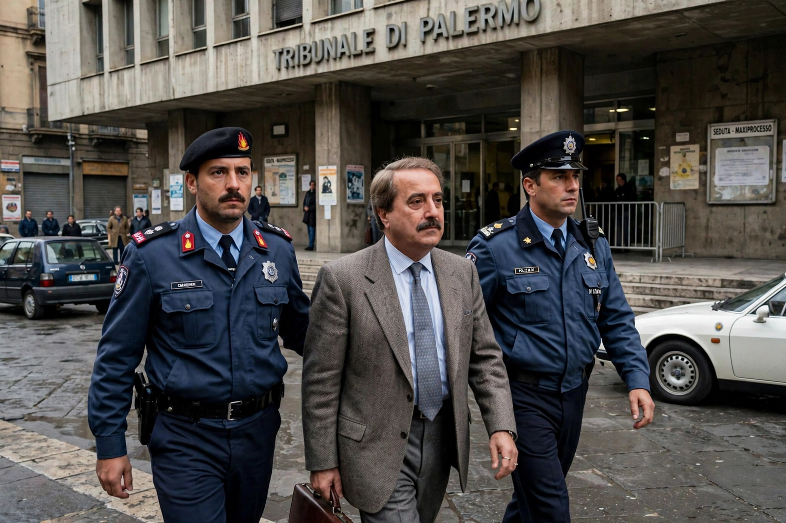

Giovanni Falcone
From Wikipedia, the free encyclopedia

Giovanni Falcone (18 May 1939 – 23 May 1992) was an Italian judge and prosecuting magistrate whose work against the Sicilian Mafia — above all the Maxi Trial of 1986–87 — revolutionised anti-mafia law enforcement. He was assassinated by the Mafia in the Capaci bombing, which killed him, his wife Francesca Morvillo and three bodyguards; his friend and colleague Paolo Borsellino was murdered two months later. Their deaths transformed Italy's relationship with Cosa Nostra.
The antimafia pool
Falcone joined Palermo's 'antimafia pool' under Rocco Chinnici (himself murdered in 1983), pioneering financial investigation — 'follow the money' — and the use of pentiti, above all Tommaso Buscetta, whose 1984 revelations of Cosa Nostra's structure underpinned the Maxi Trial: 475 defendants, 344 convictions, life sentences for the Cupola's bosses, upheld on appeal in January 1992 — the verdict that sealed Falcone's death sentence.
Assassination and legacy
On 23 May 1992 a 500-kg bomb under the A29 motorway at Capaci, detonated by Giovanni Brusca as Falcone's convoy landed from Rome, cratered the highway. Italy erupted — the 'lenzuola' protest sheets hung from Palermo balconies — parliament passed emergency anti-mafia laws, and the army deployed to Sicily; the 1993 arrests (Riina, after 24 years a fugitive) began Cosa Nostra's long decline. Palermo's airport bears Falcone and Borsellino's names; his foundation and the annual commemorations make 23 May Italy's day of legality.